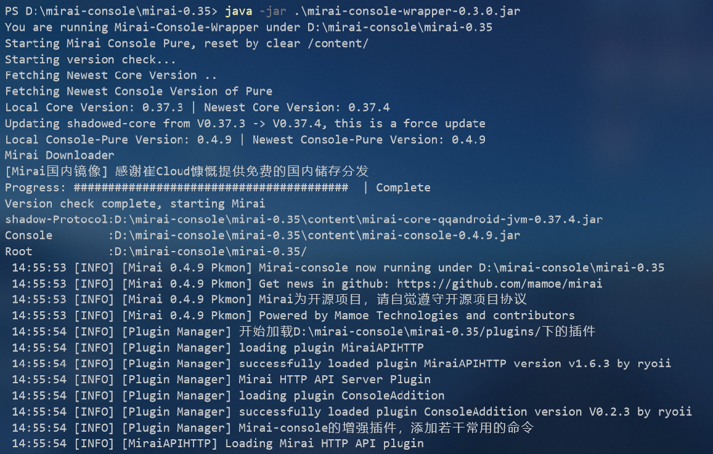
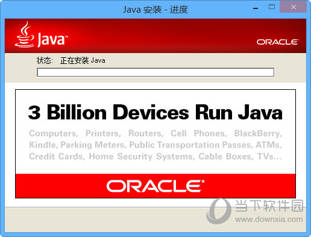
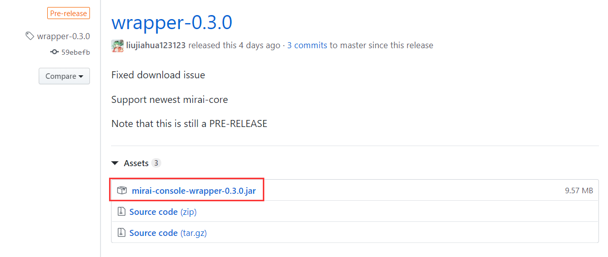
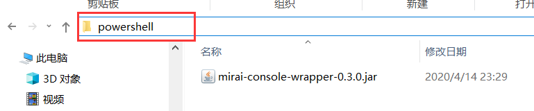
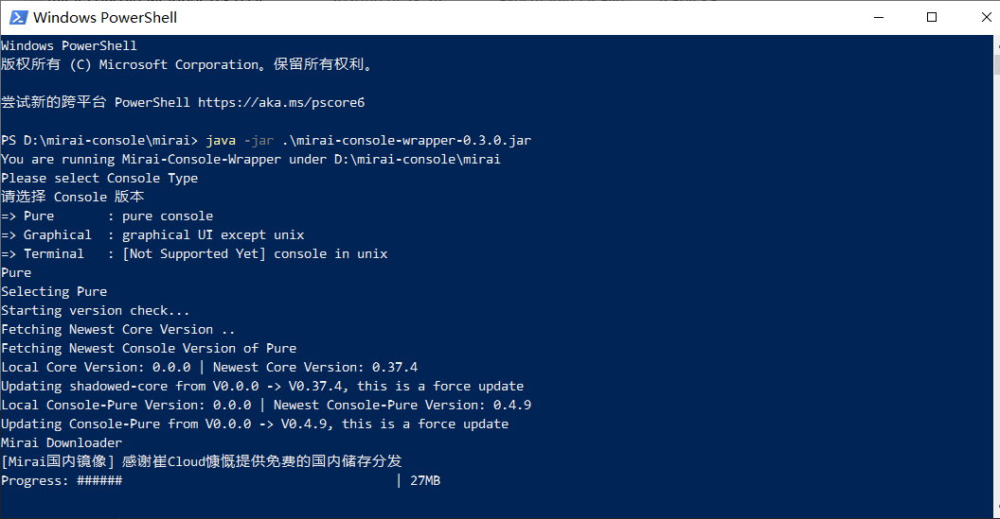
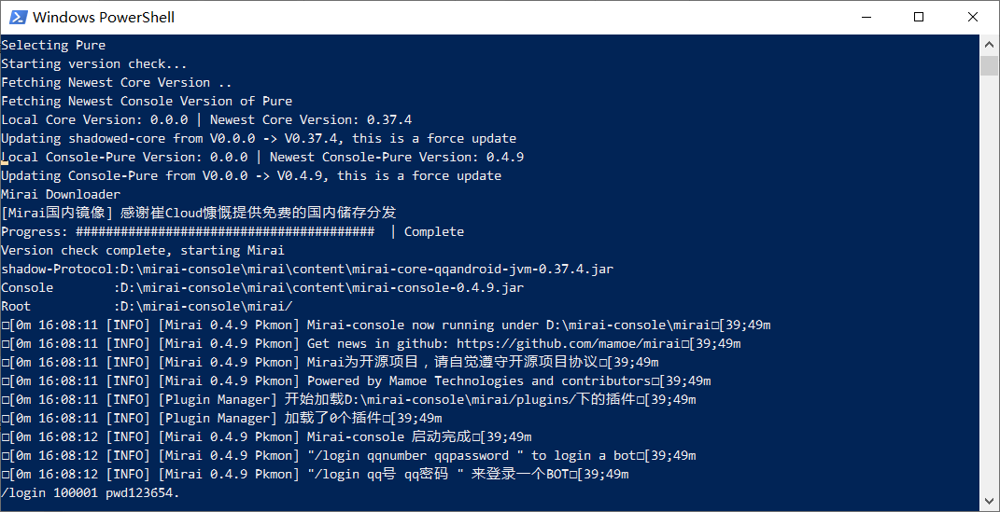

开源安卓QQ协议库 mirai 使用教程
简单的入门教程, 适合无基础小白。因水平有限，本文内容可能会有错误，还请指正。
mirai 项目简介
Mirai 是一个在全平台下运行, 提供 QQ Android 和 TIM PC 协议支持的高效率机器人框架(官方定义)。实际上因为一些原因, TIM PC 协议停止更新了。目前功能最齐全, 运行最稳定的是 QQ Android 协议。(mirai 项目地址: Github )
mirai 是由 Kotlin 编写的协议库, 提供使用 QQ Android 协议的一些 API。但是 mirai 本身不是一个 “QQ机器人” 程序, 而是一个库。与机器人软件 酷Q 对标的应该是 mirai 官方的衍生项目 mirai-console。(mirai-console 项目地址: Github )

mirai-console 提供了插件系统, 支持安装 由 Java/Kotlin 编写的 mirai-console 插件。如果安装 mirai-native 插件, 那还可以支持 酷Q 的插件, 但是目前为止机制还不够完善, 需要将 酷Q 的插件重新编译为 dll 才能给 mirai-native 使用。( mirai-native 项目地址: Github )。安装 mirai-http-api 插件, 则可以提供 HTTP API 来使用 mirai, 方便其他语言使用 mirai。( mirai-http-api 项目地址: Github )
在 windows 上使用 mirai-console
准备运行环境
运行 mirai-console 需要安装 Java 运行环境。安装 jre1.8 (或 jdk8) 以及更高版本都可以。(jre1.8 安装包下载地址: baidu ; jdk8安装包下载地址: baidu )

安装完成后, 重启计算机。打开 Powershell, 输入 java -version 或者 java --version 然后回车, 查看是否正确安装 Java。正确安装 Java 并执行上面的指令后, 其结果应该如 图 3 所示。
打开 Powershell 的方法: 同时按下键盘上的 Win 按键 (印着 windows 图标的按键) 和 字母 R 按键, 这会启动 “运行” 程序。输入
powershell然后点击确定, 就可以打开 Powershell。

下载 mirai-console-wrapper
前面介绍了 mirai-console 才是真正的 “QQ 机器人程序”。但是为了方便使用 mirai-console 总共有 6 个版本, 各个版本的说明可以见 表 1。
表 1 mirai-console 各个版本的介绍
| 名称 | 介绍 |
|---|---|
| Mirai-Console-Pure | 最纯净版, CLI环境, 通过标准输入与标准输出 交互 |
| Mirai-Console-Terminal | (UNIX)Terminal环境 提供简洁的富文本控制台 |
| Mirai-Console-Android | 安卓APP (TODO) |
| Mirai-Console-Graphical | JavaFX的图形化界面 (.jar/.exe/.dmg) |
| Mirai-Console-WebPanel | Web Panel操作(TODO) |
| Mirai-Console-Ios | IOS APP (TODO) |
根据不同的运行环境和需求, 选择对应的版本。因为本篇文章涉及到将 mirai-console 部署到 Linux, 这里以 Pure 版本为例进行讲解。
要使用 mirai-console-pure , 需要下载 mirai-console-wrapper 。mirai-console-wrapper 提供了安装、更新各个版本 mirai-console 的功能。
mirai-console-wrapper 的下载地址: https://github.com/mamoe/mirai-console/releases
找到 wrapper 开头的标题, 下载最新版本的 mirai-console-wrapper.jar 文件。(如 图 4 )

将下载好的 mirai-console-wrapper 移动到合适的位置。在地址栏中输入 powershell 并回车, 这会在当前目录启动 Powershell。(如 图 5)

启动 Powershell 后, 输入 java -jar .\mirai-console-wrapper-0.3.0.jar 并回车启动 mirai-console-wrapper。
启动 mirai-console-wrapper 后, 它会让你选择安装哪个 mirai-console 版本, 本文要安装 Pure 版本, 所以这里输入了 Pure。你可以按照你的需求来选择版本。
输入 Pure 并回车, mirai-console-wrapper 会自动从服务器下载最新版的 mirai-console 和 mirai 库 (保存在 content 文件夹里)。并会自动创建 plugins 文件夹, 这个文件夹用于存放插件和插件的配置文件。

等待下载完成后, 会显示如图 7的结果, 这就说明成功的启动了 mirai-console-pure。

直接输入 /login 你的机器人的qq号码 你的机器人的qq密码 然后回车确认, 就能登录QQ机器人了。
安装插件
自动安装插件
输入 /help 可以查看 mirai-console-pure 的指令。这个指令列表是会变化的, 比如有的插件会提供一些指令。
1 | -> manager :Add a manager |
输入 /install 可以查看插件列表。
1 | =>BiliBiliLinker ;作者: Karlatemp ;介绍: 解析BiliBili视频信息 |
输入 /install 插件名称 如: /install Rcon 就可以安装插件。
1 | [INFO] [Command] 正在连接崔云 |
手动安装插件
有几个很重要的插件没有出现在列表里, 接下来介绍手动安装插件。
mirai-http-api 插件会在本地运行一个Web服务器, 从而提供 HTTP API。这允许其他程序通过 HTTP API 来使用 mirai。安装了它, 就可以运行各种编程语言编写的插件。(按理说这类插件会很多, 但是目前来说这类插件比较少, 因为各个大佬都自己玩, 少有发布插件的)
mirai-http-api 插件下载地址: https://github.com/mamoe/mirai-api-http/releases
mirai-console-addition 插件增强了 mirai-console 的功能, 它提供了 MD5密码登录 以及 MD5密码自动登录 等功能。
mirai-console-addition 插件下载地址: https://github.com/ryoii/mirai-console-addition/releases
以 mirai-console-addition 为例, 下载最新版的 mirai-console-addition-V0.2.3.jar , 将它复制到 plugins 目录下。
重新启动 mirai-console-wrapper, 该插件即可生效。
此时再次输入 /help, 可以发现比原来多出了几个指令:
1 | -> manager :Add a manager |
多出的 login-md5 和 auto-login 指令由 mirai-console-addition 插件提供。
将 mirai 机器人部署到 Linux 服务器
未完待续…
准备运行环境
开始使用
进阶使用
开源安卓QQ协议库 mirai 使用教程